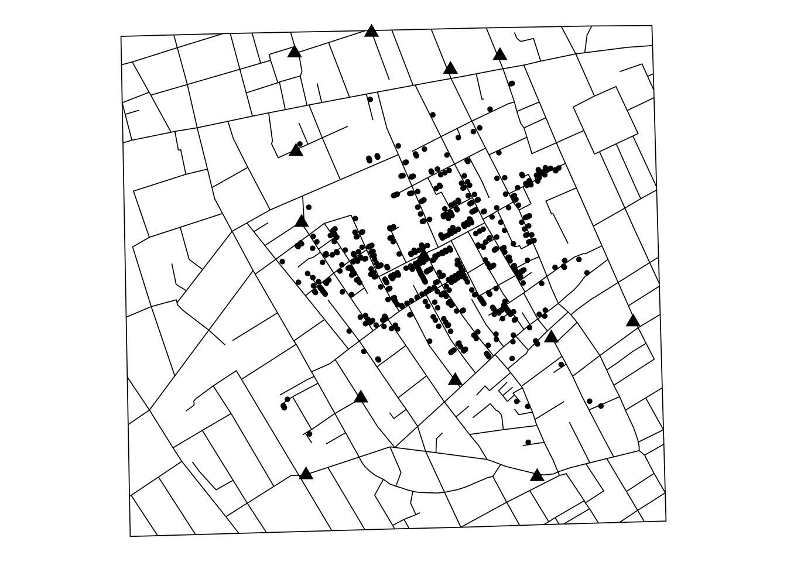

# install.packages("HistData")
# install.packages("SnowData")
# install.packages("ggplot2")データ分析と問題解決
データから社会問題を考える
演習：John Snow の分析を再現してみる
必要なパッケージをインストールする（Consoleで一度だけ実行すればよい）
マップ作成テンプレート
library(HistData)
library(ggplot2)
data("Snow.streets", package = "HistData")
data("Snow.deaths", package = "HistData")
data("Snow.pumps", package = "HistData")
ggplot() +
geom_path(
data = Snow.streets,
aes(x = x, y = y, group = street),
linewidth = 0.3
) +
geom_point(
data = Snow.deaths,
aes(x = x, y = y),
size = 1
) +
geom_point(
data = Snow.pumps,
aes(x = x, y = y),
shape = 17,
size = 3
) +
coord_fixed() +
theme_void()
1. 社会問題を見つける
問題提起
ここに今回扱う社会問題を提示します。
例えば、
人口減少が進む地域では、地域経済にどのような変化が起きているのでしょうか？
考えてみよう
次の問いについて考えてみてください。
- 人口減少によって何が起こると思いますか？
- それをデータで調べるには、どのような変数が必要でしょうか？
2. 問いをデータで検証できる形にする
社会問題を分析するためには、漠然とした問題を データで答えられる問いに変える必要があります。
分析する問い
人口減少が大きい地域ほど、地域経済も縮小しているのでしょうか？
必要なデータ
- 人口の変化
- 所得
- 雇用
- 年齢構成
- その他の地域特性
3. データを見てみる
まずデータの構造を確認します。
# ここにデータ読み込みのコードを入れるデータの確認
# head(data)4. データを可視化する
まず、変数間の関係を図で確認します。
# library(ggplot2)
# ggplot(data, aes(x = population_change, y = income)) +
# geom_point()考えてみよう
このグラフから、どのような関係が読み取れるでしょうか？
5. 数字で関係を確認する
例えば回帰分析を使って、変数間の関係を調べます。
# model <- lm(income ~ population_change, data = data)
# summary(model)6. 分析結果をどう解釈するか
仮に、
人口減少が大きい地域ほど所得が低い
という関係が見つかったとします。
しかし、
人口減少が所得を低下させた
と結論づけてよいでしょうか？
考えられる別の説明
- 地域経済の悪化が人口流出を引き起こしている
- 産業構造が人口と所得の両方に影響している
- 高齢化など別の要因が関係している
7. データから問題解決へ
分析結果を踏まえて、どのような政策が考えられるでしょうか？
例えば、
- 移住・定住支援
- 子育て支援
- 企業誘致
- 公共交通への支援
- 地域産業の活性化
最後の問い
どの政策が有効かを判断するためには、さらにどのようなデータが必要でしょうか？
今日のまとめ
データ分析による問題解決は、
社会問題 → 問い → データ → 分析 → 解釈 → 解決策
というプロセスです。
データ分析の目的は単に数字を計算することではなく、
社会問題を検証可能な問いに変え、よりよい意思決定につなげること
です。